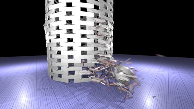
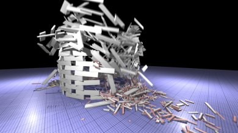
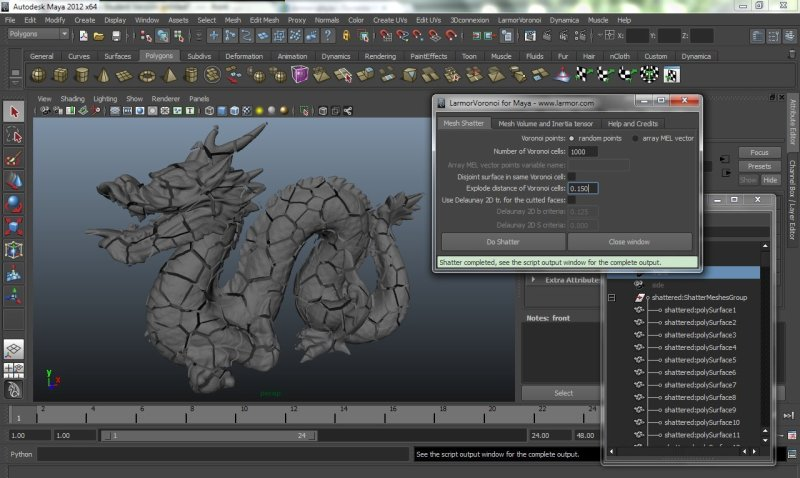
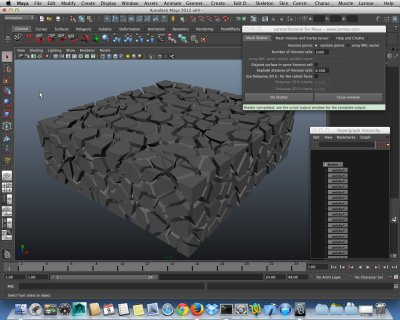
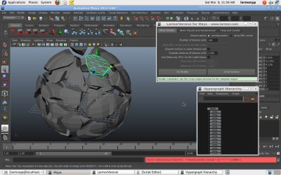
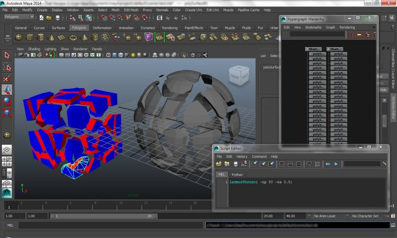

Pier Paolo Ciarravano's personal projectsCONTACT ME |
|
Houdini R&D: POP VOP CVEX in DOP and CHOP Morphing May 2017 POP VOP dynamics node with code in CVEX has been used to update the force and the torque for each cube in the Bullet Solver DOP. A CHOP network has been used for the audio driven animation. Rendered with OpenGL render node. Houdini R&D: POP VOP CVEX in DOP and CHOP Morphing from Pier Paolo Ciarravano on Vimeo. |
|
LarmorSound v.1.0 Beta extension for Fabric Engine Oct.-Nov. 2016 The extension for Fabric Engine 2.3 is in C++ for Windows and Linux. It extracts the audio from many media file types and it can play the audio and produce the numeric sound spectrum from the FFT sample analysis. It is integrated with examples for Fabric Canvas, KL and Maya and released under GNU/GPL License. Features:
GitHub project (C++ Source code is provided on request) LarmorSound v.1.0 Beta for Fabric Engine from Pier Paolo Ciarravano on Vimeo. LarmorSound v.1.0 Beta for Fabric Engine: Windows demo and Maya integration from Pier Paolo Ciarravano on Vimeo. |
|
PIC/FLIP fluid simulation solver using OpenVDB and NVIDIA CUDA From Dec. 2016 This project is another classical implementation of PIC/FLIP fluid simulation solver based on algorithms described in the book “Fluid Simulation for Computer Graphics” by Robert Bridson, but with some particular future goals:
GitHub project Youtube video link: DEBUG artifacts and issues PIC/FLIP LarmorFluid |
|
Dynamic Voronoi shatter for non-convex triangle meshes with BulletPhysics dynamic shatter on objects collision and RenderMan RIB generation 2013-2016
GitHub project Youtube video link Youtube video link Youtube video link Youtube video link   |
|
LarmorVoronoi Shatter Plugin for Maya 2012/2013/2014 for Windows, Mac OS X and Linux 2013-2016 LarmorVoronoi is a Voronoi Shatter Plug-in in C++ for Maya 2012/2013/2014 for Windows, Mac OS X and Linux, that uses the Larmor-Physx Voronoi Shatter API. The project is Free Software released under the GNU/GPL License and it is part of the Larmor-Physx Voronoi Shatter API.
GitHub project Plug-in Binary version 1.1.1Beta-Build78 for Maya 2012/2013/2014 Mac OS X. Plug-in Binary version 1.1.1Beta-Build79 for Maya 2012/2013/2014 Linux (x86_64). Plug-in Binary version 1.1.0Beta-Build77 for Maya 2012/2013/2014 Windows (64 bit). For last news, documentation updates and video tutorial visit the project page. CreativeCrash.com plug-in page. Youtube video link     |
|
Java OpenCV MatchTemplate 2008 It's a Java native library that wraps the OpenCV (the Open Source Computer Vision Library) function cvMatchTemplate and implements methods for utilities result visualization. It permits an efficient images template matching using Normalized Cross-Correlation (NCC - Fast Normalized Cross-Correlation) and others algorithms. Project's page SourceForge source code repository Video demo |
|
AlgoExplorer 2010 AlgoExplorer is a dynamic data structures viewer for Java. It permits the visualization of the data structures of a Java program and to see how objects, handled by the algorithms, interact with each other and how they are related and linked. GitHub project Final Relation Degree (Italian) Technical report - DRAFT LaTeX (English) Pdf slides (Italian) Flex AlgoExplorer viewer Video demo 2010 |
|
RemoteGuard 2010 RemoteGuard is a system for remote video and audio surveillance in Java. The system consists of a server and remote clients that deal with acquisition and playback of audio/video. GitHub project Pdf slides (Italian) Video demo |
|
How build a Fedora HPC cluster running OpenFoam in parallel, using Torque/PBS, OpenMPI, Host-based authentication and NFS 2010 Italian manual that describes how build a Fedora HPC cluster. Pdf manual (Italian) |